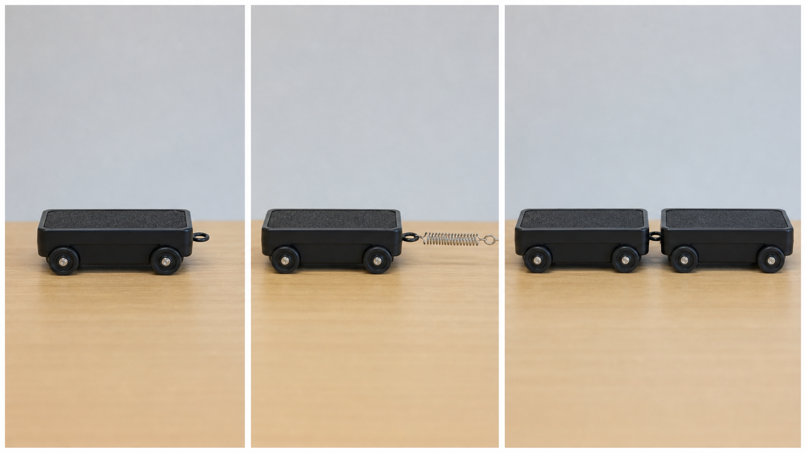
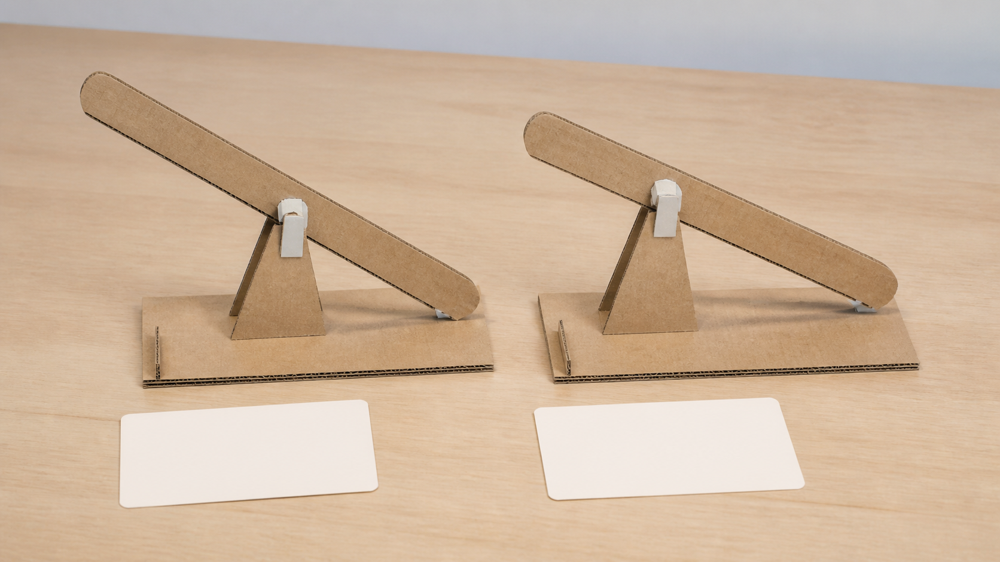

Energy disappears when the catapult makes sound and vibration.
Energy is transferred into several forms; sound and vibration are part of the energy chain.
Module 4 of 10
A moving catapult can look sudden, but the energy does not appear from nowhere. It is stored, transferred and spread through a system. Newton's laws help explain changes in motion, while a teacher-directed prototype lets you investigate one idea before committing time and material to a full solution.
Use this page to learn and prepare. Follow your teacher's demonstration, approved tools, local safety controls and testing instructions for every practical action.

Theory 1 of 3
Energy is the capacity to cause change. In an elastic catapult system, work done on an elastic component can store elastic potential energy. When the system is released under teacher-controlled conditions, some of that energy becomes kinetic energy in moving components and the projectile. Following this chain helps explain where movement comes from without saying that a component contains force or produces energy.
The law of conservation of energy states that energy is not created or destroyed; it is transferred or transformed. Not all stored energy becomes useful projectile motion. Some is transferred as sound, heat, vibration, air movement and unwanted motion of the frame. Engineers study these transfers because a system can have plenty of input energy yet perform inconsistently if energy travels through unintended pathways.
Multiple-choice knowledge check
Choose an answer, check the feedback and try again if needed. Your checked progress is saved on this device.
0 of 4 questions checkedSaved on this device
Longer response
A teacher-controlled observation shows intended motion together with a loud sound, vibration and visible frame movement. Explain how conservation of energy applies and why these observations matter when investigating inconsistent performance.
Use the scaffold to explain and justify your thinking. No drawing is required. Your writing autosaves in this browser.
Formative learning evidence — not proof of submission.
Theory 2 of 3
Newton's first law says that an object's motion stays unchanged unless a net external force acts. A stationary component remains stationary until forces become unbalanced; a moving projectile continues in motion while forces such as gravity and air resistance change that motion. Newton's second law connects net force, mass and acceleration. For the same mass, a larger net force produces a larger acceleration, but a real system also has limits, losses and interacting components.
Newton's third law says that forces occur in equal-and-opposite pairs acting on different objects. When one component pushes on another, the second pushes back on the first. The forces do not cancel each other because they act on different objects. This is why engineers draw separate force diagrams: combining every force into one vague picture can hide which object is accelerating and which part of the frame is carrying a reaction force.

Multiple-choice knowledge check
Choose an answer, check the feedback and try again if needed. Your checked progress is saved on this device.
0 of 4 questions checkedSaved on this device
Longer response
In a teacher-controlled observation, a stationary component begins to move and then pushes on another object. Explain how Newton’s three laws help describe the change without combining every force into one vague picture.
Use the scaffold to explain and justify your thinking. No drawing is required. Your writing autosaves in this browser.
Formative learning evidence — not proof of submission.
Theory 3 of 3
A prototype is a model used to investigate an idea. It may focus on one relationship, such as alignment, frame stiffness or how a moving part interacts with a pivot. A useful prototype does not have to look finished. Its value comes from a clear question and evidence that reduces uncertainty before full production. The prototype activity, materials and conditions must be approved and directed by your teacher.
A fair comparison changes one chosen variable while keeping important controlled variables consistent. Repeated trials help reveal whether a result is dependable or a one-off. A useful record names the question, the changed variable, what stayed controlled, the observations and what the evidence suggests. This does not make a test perfectly certain, but it makes the reasoning visible enough for another person to check.

Multiple-choice knowledge check
Choose an answer, check the feedback and try again if needed. Your checked progress is saved on this device.
0 of 4 questions checkedSaved on this device
Longer response
A teacher-directed prototype gives varied results after one approved feature is changed. Plan how to decide whether the evidence supports keeping the change, rejecting it or investigating again.
Use the scaffold to explain and justify your thinking. No drawing is required. Your writing autosaves in this browser.
Formative learning evidence — not proof of submission.
Worked example
Vocabulary
Common traps
Energy is transferred into several forms; sound and vibration are part of the energy chain.
The pair acts on different objects, so each object's motion must be analysed separately.
Video learning · 4:41
Next Generation Science
Watch for: What energy change occurs when an elastic component is deformed, held and then released?
Source boundary: Concept explanation only; no projectile, firing range, loading amount or launch procedure.

Use the annotated energy chain from work input to elastic potential energy, kinetic energy and transfers to sound, heat and deformation.
The privacy-enhanced player loads only when you choose it.
Applied Learning Activity
Rehearse a fair, teacher-controlled investigation before interpreting practical results.
Evidence to save: Investigation plan, prediction and retest decision, saved as formative practice.
Type the response, reasoning or record requested above. It autosaves in this browser.
Use: ‘If ___ changes while ___ stays consistent, I predict ___ because ___.’
Write a second prediction using a different Newton's law and identify what evidence would distinguish the explanations.
Higher-order evidence
A teacher-directed prototype produces varied results after one feature is changed. Explain the energy and motion involved, then decide whether the evidence supports keeping the change.
Type your response. No drawing is required. It autosaves in this browser.